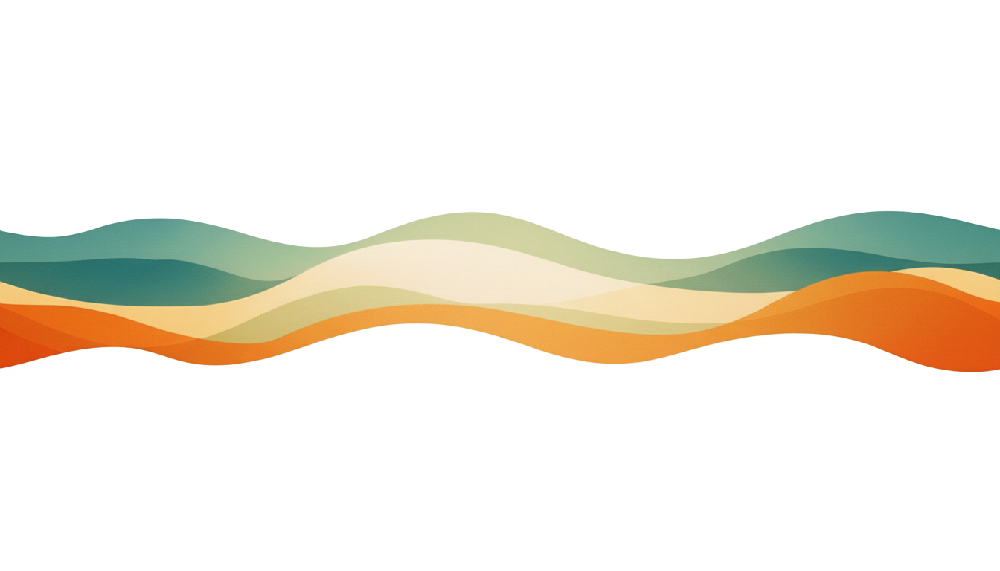
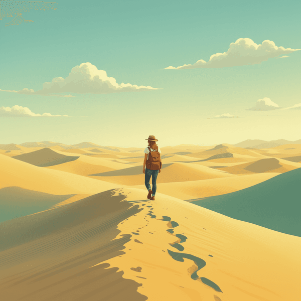
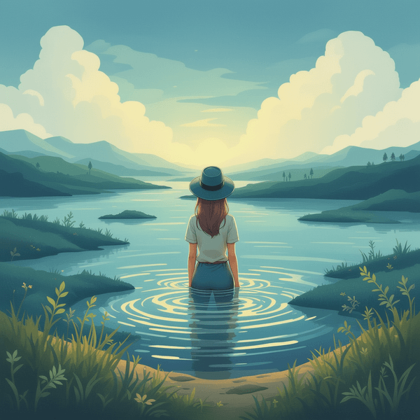
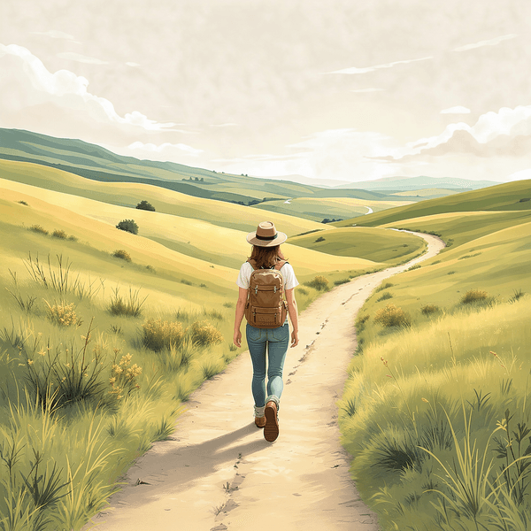
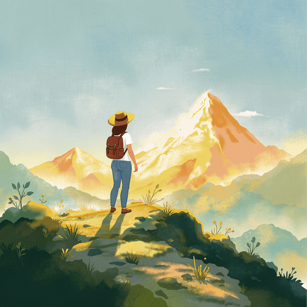

Støtten stopper, når krisen stopper.
Mestringen af hverdagen er den svære del.
Vi bygger noget til det, der kommer efter:
MitLivMed er et digitalt fællesskab, hvor mennesker med bipolar affektiv lidelse kan dele deres historier og erfaringer, skræddersyet til dig. Ikke medicinsk rådgivning. Ikke krisestøtte. Bare mennesker, der deler det, der hjælper dem med at leve godt med bipolar.
MitLivMed lancerer i 2026. Er du nysgerrig eller har du lyst til at hjælpe os, så skriv dig op som betatester og sæt dit præg på MitLivMed.

Den består af en række landskaber, mange genkender
Noget føles forkert. Du kan mærke det, før du kan forklare det. Du er ikke alene, mens du finder ordene.

Du har fået en diagnose. Hvad gør man så? Her kan du skabe overblik i alt det nye og høre andres oplevelser.

Hverdagen kan ofte være en svære del. Rutinerne er det, der kan skabe ro, og vi deler & bygger dem sammen i små skridt.

Du kender dine mønstre og dine behov. Hvis du har lyst, kan din historier og erfaringer også blive et lys for andre.

MitLivMed er et modereret digitalt fællesskab for mennesker med bipolar. Her deler vi levede erfaringer gennem videoer og indlæg med fokus på det der faktisk har hjulpet os i hverdagen.
Det er til dig, der savner støtte og spejling efter diagnosen. Måske leder du efter håb, genkendelse, eller bare nogen der har stået der før.
Du behøver ikke dele noget selv. Du kan følge med, lære, reflektere — eller bidrage, hvis du har lyst. Du bestemmer.
Alt indhold bliver gennemgået, og fællesskabet er modereret og guidet af fagpersoner, så din oplevelse føles trygt med respekt for dit privatliv.
Pårørende er også velkomne. Partnere, familie og venner til mennesker med bipolar kan deltage, så længe de følger fællesskabets retningslinjer.